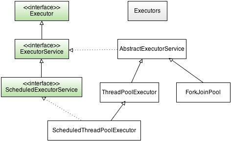
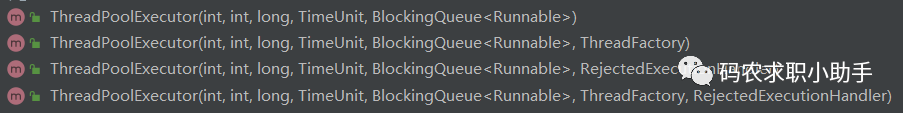
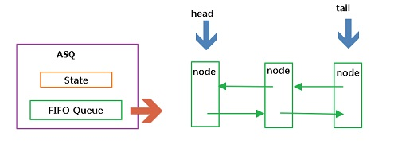
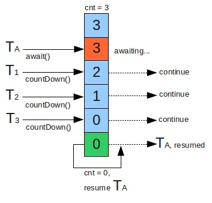
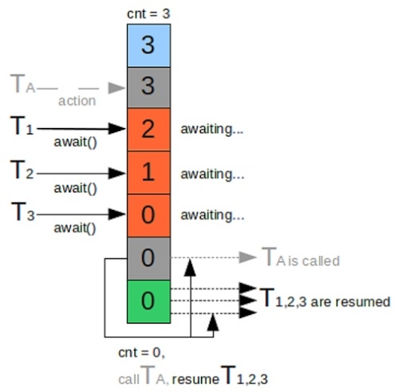
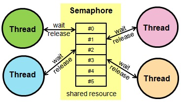
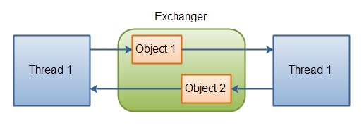
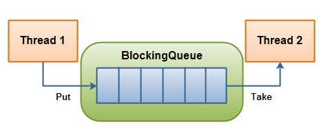
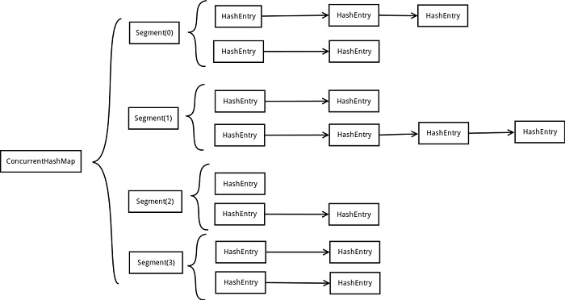
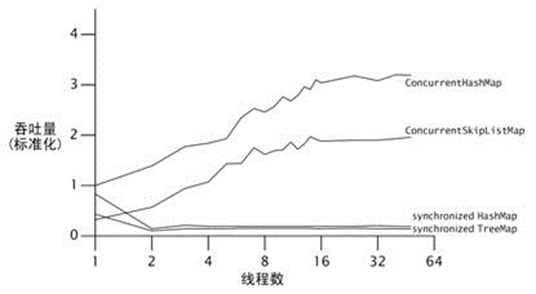

原文连接:https://www.cnblogs.com/autism-dong/p/12059017.html
转载自http://www.cnblogs.com/chenpi/结合自己理解稍有添加自己的理解
阅读目录
- JSR 166及J.U.C
- Executor框架（线程池、 Callable 、Future）
- AbstractQueuedSynchronizer （AQS框架）
- Locks & Condition（锁和条件变量）
- Synchronizers（同步器）
- Atomic Variables（原子变量）
- BlockingQueue（阻塞队列）
- Concurrent Collections（并发容器）
- Fork/Join并行计算框架
- TimeUnit枚举
- 参考资料
JSR 166及J.U.C
什么是JSR：
JSR，全称 Java Specification Requests， 即Java规范提案， 主要是用于向JCP(Java Community Process)提出新增标准化技术规范的正式请求。每次JAVA版本更新都会有对应的JSR更新，比如在Java 8版本中，其新特性Lambda表达式对应的是JSR 335，新的日期和时间API对应的是JSR 310。
什么是JSR 166：
当然，本文的关注点仅仅是JSR 166，它是一个关于Java并发编程的规范提案，在JDK中，该规范由java.util.concurrent包实现，是在JDK 5.0的时候被引入的；
另外JDK6引入Deques、Navigable collections，对应的是JSR 166x，JDK7引入fork-join框架，用于并行执行任务，对应的是JSR 166y。
什么是J.U.C：
即java.util.concurrent的缩写，该包参考自EDU.oswego.cs.dl.util.concurrent，是JSR 166标准规范的一个实现；
膜拜
那么，JSR 166以及J.U.C包的作者是谁呢，没错，就是Doug Lea大神，挺牛逼的，大神级别任务，贴张照片膜拜下。。。
Executor框架（线程池、 Callable 、Future）
什么是Executor框架
简单的说，是一个任务的执行和调度框架(线程池),将任务的提交过程和执行过程分离开来,涉及的类如下图所示：

其中，最顶层是Executor接口，它的定义很简单，一个用于执行任务的execute方法，如下所示：
public interface Executor {
void execute(Runnable command);
} 另外，我们还可以看到一个Executors类，它是一个工具类（有点类似集合框架的Collections类），用于创建ExecutorService、ScheduledExecutorService、ThreadFactory 和 Callable对象。
典型步骤：
定义好任务（如Callable对象），把它提交给ExecutorService（如线程池）去执行，得到Future对象，然后调用Future的get方法等待执行结果即可。
举个例子（不完整，仅仅演示流程）：
ExecutorService executor = Executors.newCachedThreadPool();//创建线程池
Task task = new Task(); //创建Callable任务
Future<Integer> result = executor.submit(task);//提交任务给线程池执行
result.get()；//等待执行结果; 可以传入等待时间参数，指定时间内没返回的话，直接结束什么是任务：
实现Callable接口或Runnable接口的类，其实例就可以成为一个任务提交给ExecutorService去执行；
其中Callable任务可以返回执行结果，Runnable任务无返回结果；
什么是线程池
线程池提供了一种限制和管理资源(线程)的方式,每个线程池还维护了一些基本的统计信息,例如:已完成的任务数量
使用线程池的优点：
1.降低资源消耗 : 重复利用已创建的线程降低了线程的新建,销毁造成的消耗
2.提高响应速度 : 任务需要执行时,不需要等待线程的创建,提高了响应速度
3.提高线程的可管理性 : 线程是稀缺资源,如果无限制创建,不仅会消耗系统资源而且还会降低系统的稳定性,使用线程池可以对多个线程进行统一分配,调优和监控
线程池的创建
方式一:通过ThreadPoolExecutor的构造方法实现

参数解析:
1.corePoolSize(线程池的基本大小): 线程池基本的线程创建数量, 任务数<基本大小,即便有现成可用空闲线程也会创建新线程执行,大于等于时才利用空闲线程
2.maximumPoolSize(线程池最大数量) : 有界队列中,无空闲线程执行任务,且线程数已到达基本大小 时任务会被放置于任务队列之中,当任务队列已满时,任务仍然无线程可执行,就会新创建线程,而此参数即是限制此线程数量
3.keepAliveTime(线程活动保持时间) : 线程空闲时能够继续存活的时间
4.TimeUnit(线程活动保持时间的单位) :单位有天,时,分,秒,毫秒,微秒,纳秒
5. workQueue(任务队列) : 用以保存等待线程执行的任务的阻塞队列
6.threadFactory(创建线程的线程工厂) : 可以通过自定义线程工厂来自定义池中的线程
7. RejectExecutionHandler(饱和策略) : 任务队列和线程池都满的情况下,仍有任务需要执行时采取的应对策略,默认AbortPolicy直接抛出异常
饱和策略:
1. AbortPolicy：直接抛出异常。
2. CallerRunsPolicy：只用调用者所在线程来运行任务。
3. DiscardOldestPolicy：丢弃队列里最近的一个任务，并执行当前任务。
4. DiscardPolicy：不处理，丢弃掉。
当然，也可以根据应用场景需要来实现RejectedExecutionHandler 接口自定义 策略。如记录日志或持久化存储不能处理的任务。
方式二:通过Executor框架的工具类Executors来实现
- newCachedThreadPool ：大小不受限，当线程释放时，可重用该线程；
- newFixedThreadPool ：大小固定，无可用线程时，任务需等待，直到有可用线程；
- newSingleThreadExecutor ：创建一个单线程，任务会按顺序依次执行；
- newScheduledThreadPool：创建一个定长线程池，支持定时及周期性任务执行
注意:
《阿里巴巴Java开发手册》中强制线程池不允许使用 Executors 去创建，而是通过 ThreadPoolExecutor 的方式，这样的处理方式让写的同学更加明确线程池的运行规则，规避资源耗尽的风险。
Executors 创建线程池对象的弊端如下：
FixedThreadPool 和 SingleThreadExecutor ：允许请求的队列长度Integer.MAX_VALUE，可能堆积大量的请求，从而导致 OOM。CachedThreadPool 和 ScheduledThreadPool ： 允许创建的线程数量为 Integer.MAX_VALUE ，可能会创建大量线程，从而导致 OOM。
创建线程池中的线程数一般怎么设置,需要考虑哪些问题?
1.线程池中线程执行任务的性质 : 任务为IO密集型还是计算密集型,IO型主要消耗在IO流的等待中,cpu使用率较低,自然线程数量设置较少,同样计算密集型较多
2.CPU使用率 :可观察CPU使用率来判定线程数量,并不是越多越好
当线程数量大时,第一线程的频繁创建会消耗大量的资源.第二,线程数量多,并发处理任务会出现任务集中在很短的时间内全部完成,任务不会在任务队列中阻塞,而完成之后CPU便处于空闲状态,此时 CPU的使用率会呈现锯齿状态,短时间飙高,而正确的使用率应该处于一个平缓的状态,让部分任务阻塞在队列之中等待执行,既复用了线程,又使得CPU使用率呈现平缓状态
3.内存使用率 : 线程数量和队列大小都会影响内存使用率,队列大小应该通过计算任务的数量进行合理设置
4.下游系统抗并发能力 : 考虑下游业务逻辑代码承受线程并发的能力
补充：批量任务的执行方式
方式一：首先定义任务集合，然后定义Future集合用于存放执行结果，执行任务，最后遍历Future集合获取结果；
- 优点：可以依次得到有序的结果；
- 缺点：不能及时获取已完成任务的执行结果；
方式二：首先定义任务集合，通过CompletionService包装ExecutorService，执行任务，然后调用其take()方法去取Future对象
- 优点：及时得到已完成任务的执行结果
- 缺点：不能依次得到结果
这里稍微解释下，在方式一中，从集合中遍历的每个Future对象并不一定处于完成状态，这时调用get()方法就会被阻塞住，所以后面的任务即使已完成也不能得到结果；而方式二中，CompletionService的实现是维护一个保存Future对象的BlockingQueue，只有当这个Future对象状态是结束的时候，才会加入到这个Queue中，所以调用take()1能从阻塞队列中拿到最新的已完成任务的结果；
AbstractQueuedSynchronizer （AQS框架）
什么是AQS框架
AQS框架是J.U.C中实现锁及同步机制的基础，其底层是通过调用 LockSupport .unpark()和 LockSupport .park()实现线程的阻塞和唤醒。
AbstractQueuedSynchronizer是一个抽象类，主要是维护了一个int类型的state属性和一个非阻塞、先进先出的线程等待队列；其中state是用volatile修饰的，保证线程之间的可见性，队列的入队和出对操作都是无锁操作，基于自旋锁和CAS实现；另外AQS分为两种模式：独占模式和共享模式，像ReentrantLock是基于独占模式模式实现的，CountDownLatch、CyclicBarrier等是基于共享模式。

简单举个例子
非公平锁的lock方法的实现：

final void lock() {
//CAS操作，如果State为0（表示当前没有其它线程占有该锁），则将它设置为1
if (compareAndSetState(0, 1))
setExclusiveOwnerThread(Thread.currentThread());
else
acquire(1);
}首先是不管先后顺序，直接尝试获取锁（非公平的体现)，成功的话，直接独占访问；
如果获取锁失败，则调用AQS的acquire方法，在该方法内部会调用tryAcquire方法再次尝试获取锁以及是否可重入判断，如果失败，则挂起当前线程并加入到等待队列；
具体可查看ReentrantLock.NonfairSync类和AbstractQueuedSynchronizer类对应的源码。
理解:
ASQ是抽象的同步器队列,其中的重点是并发同步器执行所需要的三个重要组成部分- ASQ定义了抽象的实现方式,其中线程,队列的操作为核心的算法,后代实现类使用模板方法模式实现其中共享状态表示什么,而依据需求共享状态什么情况下获取什么情况获取,
- ASQ的实现:TreentrantLock(可重入锁) -----独占
CountDownLatch(闭锁) CyclicBarrier(栅栏) Semaphore(信号量) ----共享
TreentrantReadWriteLock(读写锁) ----读共享,写独占
Locks & Condition（锁和条件变量）
先看一下Lock接口提供的主要方法，如下：
- lock() 等待获取锁
- lockInterruptibly() 可中断等待获取锁，synchronized无法实现可中断等待
- tryLock() 尝试获取锁，立即返回true或false
- tryLock(long time, TimeUnit unit) 指定时间内等待获取锁
- unlock() 释放锁
- newCondition() 返回一个绑定到此
Lock实例上的Condition实例
关于Lock接口的实现，我们主要是关注以下两个类：
- ReentrantLock
- ReentrantReadWriteLock
ReentrantLock
可重入锁，所谓的可重入锁，也叫递归锁，是指一个线程获取锁后，再次获取该锁时，不需要重新等待获取。ReentrantLock分为公平锁和非公平锁，公平锁指的是严格按照先来先得的顺序排队等待去获取锁，而非公平锁每次获取锁时，是先直接尝试获取锁，获取不到，再按照先来先得的顺序排队等待。
注意：ReentrantLock和synchronized都是可重入锁。
ReentrantReadWriteLock
可重入读写锁，指的是没有线程进行写操作时，多个线程可同时进行读操作，当有线程进行写操作时，其它读写操作只能等待。即“读-读能共存，读-写不能共存，写-写不能共存”。
在读多于写的情况下，读写锁能够提供比排它锁更好的并发性和吞吐量。
Condition
Condition对象是由Lock对象创建的，一个Lock对象可以创建多个Condition，其实Lock和Condition都是基于AQS实现的。
Condition对象主要用于线程的等待和唤醒，在JDK 5之前，线程的等待唤醒是用Object对象的wait/notify/notifyAll方法实现的，使用起来不是很方便；
在JDK5之后，J.U.C包提供了Condition，其中：
Condition.await对应于Object.wait；
Condition.signal 对应于 Object.notify；
Condition.signalAll 对应于 Object.notifyAll；
使用Condition对象有一个比较明显的好处是一个锁可以创建多个Condition对象，我们可以给某类线程分配一个Condition，然后就可以唤醒特定类的线程。
Synchronizers（同步器）
J.U.C中的同步器主要用于协助线程同步，有以下四种：
- 闭锁 CountDownLatch
- 栅栏 CyclicBarrier
- 信号量 Semaphore
- 交换器 Exchanger
闭锁 CountDownLatch
闭锁主要用于让一个主线程等待一组事件发生后继续执行，这里的事件其实就是指CountDownLatch对象的countDown方法。注意其它线程调用完countDown方法后，是会继续执行的，具体如下图所示：

在CountDownLatch内部，包含一个计数器，一开始初始化为一个整数（事件个数），发生一个事件后，调用countDown方法，计数器减1，await用于等待计数器为0后继续执行当前线程；
如上图：TA主线程会一直等待，直到计数cnt=0,才继续执行，
可参照http://www.cnblogs.com/chenpi/p/5358579.html
栅栏 CyclicBarrier
栅栏主要用于等待其它线程，且会阻塞自己当前线程，所有线程必须同时到达栅栏位置后，才能继续执行；且在所有线程到达栅栏处，可以触发执行另外一个预先设置的线程，具体如下图所示：

在上图中，T1、T2、T3每调用一次await，计数减减，且在它们调用await方法的时候，如果计数不为0，会阻塞自己的线程；
另外，TA线程会在所有线程到达栅栏处（计数为0）的时候，才开始执行；
可参照 http://www.cnblogs.com/chenpi/p/5358579.html
信号量Semaphore
信号量主要用于控制访问资源的线程个数，常常用于实现资源池，如数据库连接池，线程池...
在Semaphore中，acquire方法用于获取资源，有的话，继续执行（使用结束后，记得释放资源），没有资源的话将阻塞直到有其它线程调用release方法释放资源；

可参照之前写的一篇文章，如下链接，里面有一个信号量的demo示例。
http://www.cnblogs.com/chenpi/p/5358579.html
交换器 Exchanger
交换器主要用于线程之间进行数据交换；
当两个线程都到达共同的同步点（都执行到exchanger.exchange的时刻）时，发生数据交换，否则会等待直到其它线程到达；

Atomic Variables（原子变量）
原子变量主要是方便程序员在多线程环境下，无锁的进行原子操作；
原子类是基于Unsafe实现的包装类，核心操作是CAS原子操作；所谓的CAS操作，即compare and swap，指的是将预期值与当前变量的值比较(compare)，如果相等则使用新值替换(swap)当前变量，否则不作操作；我们可以摘取一段AtomicInteger的源码，如下：
public final boolean compareAndSet(int expect, int update) {
return unsafe.compareAndSwapInt(this, valueOffset, expect, update);
}在compareAndSwapInt方法中，valueOffset是内存地址，expect是预期值，update是更新值，如果valueOffset地址处的值与预期值相等，则将valueOffset地址处的值更新为update值。PS:现代CPU已广泛支持CAS指令；
在Java中，有四种原子更新方式，如下：
- 原子方式更新基本类型； AtomicInteger 、 AtomicLong 等
- 原子方式更新数组； AtomicIntegerArray、 AtomicLongArray等
- 原子方式更新引用； AtomicReference、 AtomicReferenceFieldUpdater…
- 原子方式更新字段； AtomicIntegerFieldUpdater、 AtomicStampedReference(解决CAS的ABA问题)…
更多关于原子变量，可以参考：
atomic包 ：http://www.cnblogs.com/chenpi/p/5375805.html
AtomicInteger源码注释：http://www.cnblogs.com/chenpi/p/5357136.html
理解sun.misc.Unsafe：http://www.cnblogs.com/chenpi/p/5389254.html
提个醒：简单的自增操作，如i++，并不是一个原子操作，不过使用原子变量类进行操作，如调用incrementAndGet()方法进行自增，可以使其成为原子操作；
BlockingQueue（阻塞队列）
阻塞队列提供了可阻塞的入队和出对操作，如果队列满了，入队操作将阻塞直到有空间可用，如果队列空了，出队操作将阻塞直到有元素可用；

在Java中，主要有以下类型的阻塞队列：
- ArrayBlockingQueue ：一个由数组结构组成的有界阻塞队列。
- LinkedBlockingQueue ：一个由链表结构组成的有界阻塞队列。
- PriorityBlockingQueue ：一个支持优先级排序的无界阻塞队列。
- DelayQueue：一个支持延时获取元素的无界阻塞队列。
- SynchronousQueue：一个不存储元素的阻塞队列。
- LinkedTransferQueue：一个由链表结构组成的无界阻塞队列。
- LinkedBlockingDeque：一个由链表结构组成的双向阻塞队列。
阻塞队列有一个比较典型的应用场景是解决生产者-消费者问题，具体参考：
使用阻塞队列解决生产者-消费者问题 : http://www.cnblogs.com/chenpi/p/5553325.html
Concurrent Collections（并发容器）
接下来，我们来看一下工作中比较常见的一块内容，并发容器；
说到并发容器，不得不提同步容器，在JDK5之前，为了线程安全，我们一般都是使用同步容器，同步容器主要有以下缺点：
- 同步容器对所有容器状态的访问都串行化，严重降低了并发性；
- 某些复合操作，仍然需要加锁来保护
- 迭代期间，若其它线程并发修改该容器，会抛出ConcurrentModificationException异常，即快速失败机制
对于复合操作，我们可以举个例子, 因为比较容易被忽视，如下代码：
public static Integer getLast(Vector<Integer> list){
int lastIndex = list.size() - 1;
if(lastIndex < 0) return null;
return list.get(lastIndex);
}在以上代码中，虽然list集合是Vector类型，但该方法仍然不是原子操作，因为在list.size()和list.get(lastIndex)之间，可能已经发生了很多事。
那么，在JDK 5之后，有哪些并发容器呢，这里主要说两种，如下：
- ConcurrentHashMap
- CopyOnWriteArrayList/Set
ConcurrentHashMap
ConcurrentHashMap是采用分离锁技术，在同步容器中，是一个容器一个锁，但在ConcurrentHashMap中，会将hash表的数组部分分成若干段，每段维护一个锁；这些段可以并发的进行写操作，以达到高效的并发访问，如下图示例：

另外，性能是我们比较关心的，我们可以与同步容器做个对比，如下图所示，PS:该图资料来自参考内容~,我自身没做过测试：

CopyOnWriteArrayList/Set
也叫拷贝容器，指的是写数据的时候，重新拷贝一份进行写操作，完成后，再将原容器的引用指向新的拷贝容器。
适用情况：当读操作远远大于写操作的时候，考虑用这个并发集合。
Fork/Join并行计算框架
这块内容是在JDK7中引入的，个人觉得相当牛逼，可以方便利用多核平台的计算能力，简化并行程序的编写，开发人员仅需关注如何划分任务和组合中间结果。
fork/join框架的核心是ForkJoinPool类，实现了工作窃取算法（对那些处理完自身任务的线程，会从其它线程窃取任务执行）并且能够执行 ForkJoinTask任务。
其实对于使用fork/join框架的开发人员来说，主要任务还是在于任务划分，可以参考如下伪代码：
if (任务足够小){
直接执行该任务;
}else{
将任务拆分成多个子任务;
执行这些子任务并等待结果;
}具体可以参考，里面有一个使用fork/join框架进行图片水平模糊的例子：
TimeUnit枚举
TimeUnit是java.util.concurrent包下面的一个枚举类，TimeUnit提供了可读性更好的线程暂停操作。
在JDK5之前，一般我们暂停线程是这样写的：
Thread.sleep（2400000）//可读性差可读性相当的差，一眼看去，不知道睡了多久；
在JDK5之后，我们可以这样写：
TimeUnit.SECONDS.sleep(4);
TimeUnit.MINUTES.sleep(4);
TimeUnit.HOURS.sleep(1);
TimeUnit.DAYS.sleep(1);清晰明了；
另外，TimeUnit还提供了便捷方法用于把时间转换成不同单位，例如，如果你想把秒转换成毫秒，你可以使用下面代码
TimeUnit.SECONDS.toMillis(44);// 44,000参考资料
《并发编程实战》
《JAVA 编程思想-4版》
谷歌，百度
并发编程网
http://howtodoinjava.com/category/core-java/multi-threading/
http://www.infoq.com/cn/articles/jdk1.8-abstractqueuedsynchronizer
https://zh.wikipedia.org/wiki/JCP
http://geekrai.blogspot.com/2013/07/executor-framework-in-java.html
@Author Autism-Dong
@HomePageUrl https://www.cnblogs.com/autism-dong/
@Copyright https://www.cnblogs.com/chenpi/p/5614290.html#_label0